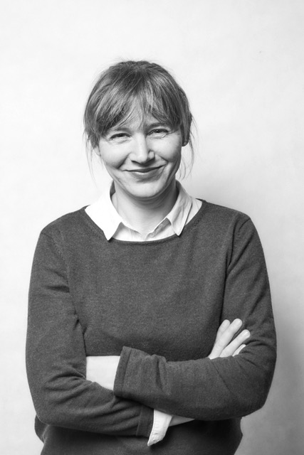

ZUR PERSON

| 2017 | Abschluss Zusatzausbildung bei ARTOP (HU-Berlin) |
|---|---|
| seit 2015 | Berufung in die Prüfungskommission der HWK-Berlin (Ehrenamt) - Prüfungskommisionsvorsitz seit 2019 |
| seit 2013 | Dozententätigkeit an der Handwerkskammer (HWK) Berlin |
| seit 2005 | Freiberuflich als Restauratorin in der Wandmalerei tätig |
| 2006-2012 | Studium an der FH-Potsdam im Fachbereich Restaurierung für Wandmalerei und Architekturfassung mit Dipl. Ing. Abschluss |
| 2003-2005 | Vorpraktikum zum Restaurationsstudium bei Dr. Jan Raue in Berlin |
| 1999-2003 | Arbeit als Malerin und Lackiererin |
| 1996-1999 | Ausbildung zur Malerin und Lackiererin in Berlin |